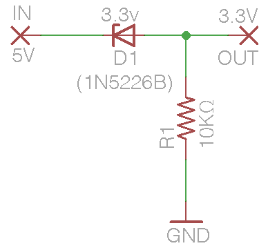

NS73 Arduino Driver
Arduino driver for the Niigata Seimitsu NS73M low-power FM transmitter.
Copyright © 2012 Conor Peterson (conor.p.peterson@gmail.com)
Special thanks to Lee Montgomery of Neighborhood Public Radio.
License
This program is free software: you can redistribute it and/or modify it under the terms of the GNU General Public License as published by the Free Software Foundation, either version 3 of the License, or (at your option) any later version.
This program is distributed in the hope that it will be useful, but WITHOUT ANY WARRANTY; without even the implied warranty of MERCHANTABILITY or FITNESS FOR A PARTICULAR PURPOSE. See the GNU General Public License for more details. You should have received a copy of the GNU General Public License along with this program. If not, see http://www.gnu.org/licenses/.
About This Driver
This is an Arduino driver for the Niigata Seimitsu NS73M low-power FM transmitter. It implements frequency selection and most other interesting features of the chip including adjustable input sensitivity and transmission power, muting, and the ability to take the transmitter offline. At present it uses SPI to communicate with the NS73M, though I2C support may be possible in the future. It requires approximately 32 bytes of RAM and 30 bytes of EEPROM to store calibration information. You can obtain one of these on a breakout board from Sparkfun, product number #WRL-08482. The frequency range is 87.5 (channel 0) to 107.9 MHz (channel 102).
How To Use This Code
- Copy NS73.cpp and NS73.h into your sketch folder. Make sure to #include "NS73.h" at the top of your sketch.
- In your sketch's setup() function, initialize the NS73 module like this:
#include "NS73.h" #define ns73DataPin 2 #define ns73ClockPin 3 #define ns73LatchPin 4 #define ns73TEBPin 5 void setup() { NS73.begin(ns73DataPin, ns73ClockPin, ns73LatchPin, ns73TEBPin); NS73.setChannel(47); //Channel 47 is 96.9 MHz. NS73.goOnline(); }
- Change the channel in .2 MHz increments with NS73.channelUp() and NS73.channelDown(). For a complete table of channels, see the table of channels and frequencies. You don't need to take the transmitter offline to change channels.
Additional Notes
- Setting by frequency: in the above example, the transmission frequency is set to 96.9, an open station in the Albuquerque area, with NS73.setChannel(47). If you want to obtain the frequency the transmitter is using (perhaps to show on an LCD) call NS73.getFrequency(), which would return 969 in this case. Note the omission of a decimal point. Using the same convention, you can also set the frequency with NS73.setFrequency(969). Ordinarily it is not possible to set the transmitter between frequencies, but if you want to explore this possibility please see the additional notes on hacking.
- Calibration and EEPROM: The NS73 requires calibration in order get a channel lock. The provided calibration has been checked against several chips with good results, but may not match yours. If the NS73 library fails to get a frequency lock when changing channels, the driver will automatically cycle through some oscillator parameters. This might take two full seconds! If it succeeds, it will modify the calibration table in EEPROM so that future channel changes will happen much faster. For more information, see the notes on hacking.
Connecting to Your Arduino
VCC: connect to Arduino's 3.3v power rail.
GND: connect to Arduino's ground.
TEB: connect to one of the Arduino's digital I/O pins.
IIC: connect to ground.
DA, LA, CK: connect to Arduino digital I/O pins:
WARNING! The NS73 is a 3.3 volt part, but your Arduino almost certainly operates at 5 volts. This means you must take special care when connecting the clock/data/latch lines or you will cook your transmitter. This problem is pervasive with Arduino peripherals and solutions are manifold but my favorite for simple, one-way I/O lines is to use zener diodes in conjunction with resistors.
For each I/O line you need:
- One 3.3 volt zener diode (1N5226B)
- One standard 10kΩ resistor

Connect the outgoing I/O line from the Arduino to the black band leg of the zener diode. Connect the other leg of the diode to the 10KΩ resistor. Connect the remaining leg of the resistor to ground. Connect the appropriate I/O line on the NS73M module to the junction between the zener diode and the resistor. Repeat this circuit for data, clock and latch.